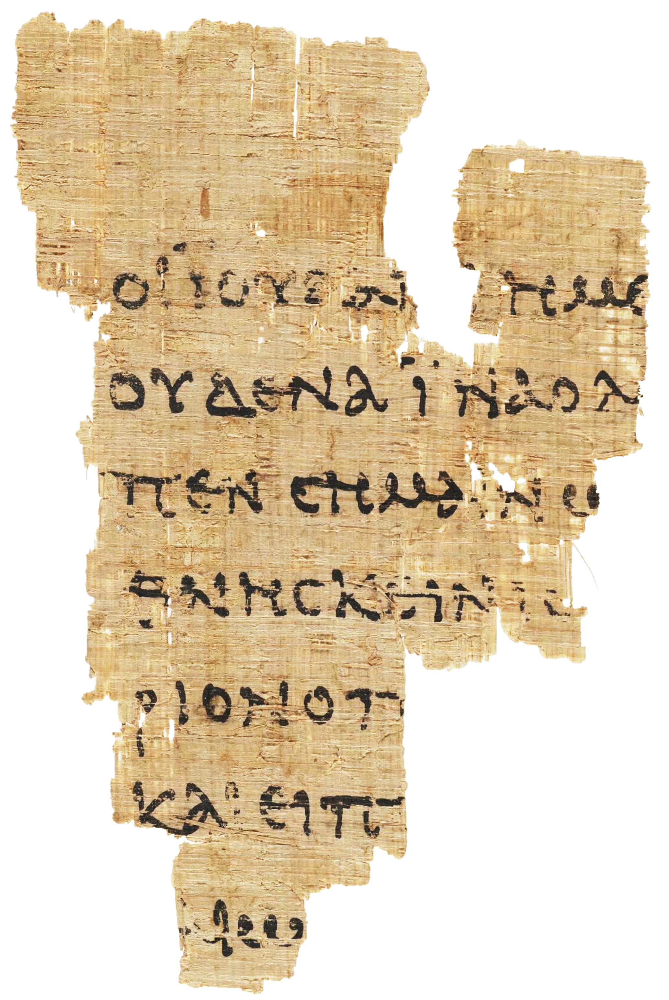

Line 01 • John 18:31
"...ΟΙ ΙΟΥΔΑΙΟΙ ΗΜΙΝ …”
“… οἱ Ἰουδαῖοι ἡμῖν …”
“…hoi Ioudaioi eimin…”
“…The Jews, “We…”
Take a closer look at the earliest surviving witness to the Gospel
DRAG TO EXPLORE • SCROLL TO ZOOM • CLICK THE GOLD MARKERS

“… οἱ Ἰουδαῖοι ἡμῖν …”
“…hoi Ioudaioi eimin…”
“… οὐδένα ἵνα ὁ λόγος …”
“…oudena ina o logos…”
“… εἶπεν σημαίνων …”
“…eipen seimainoun…”
“… ἀποθνῄσκειν ἰσῆλθεν …”
“…apothneskein iseilthen…”
“… πραιτώριον ὁ Πιλᾶτος …”
“… praitorion ho Pilatos…”
“… καὶ εἶπεν …”
“… kai eipen…”
“… Ἰουδαίων ”
“… Ioudaion.”
Look closely at the Λ (lambda) here, beginning the word λόγος (logos). In the context of this passage, λόγος refers to the words Jesus previously spoke (Matthew 20:18-19) prophesying of His future death.
But, here, we are also invited to recall the first time John wrote λόγος , at the beginning of his εὐαγγέλιον (gospel) in John 1:1 –
The connection becomes even more striking when we remember Genesis 1, where God brings creation into existence through His spoken word: “And God said…”
In John’s Gospel, the eternal Logos is not merely a spoken word, but Christ Himself—the divine Word through Whom and for Whom all things were made (Colossians 1:16).
P52 is small, but its story is enormous. It provides a physical window into the early transmission of the Gospel of John and gives visitors an opportunity to examine an ancient New Testament witness with their own eyes.
The surviving text on the fragment comes from the Gospel of John, including the account of Jesus on trial before Pilate.
The fragment preserves New Testament text in 1st Century Koine Greek as part of the Alexandrian-text type, or transmission family, of manuscripts.
Papyrus 52 (P52) attests to the early Christian affinity for the codex, as writing on both sides indicates it came from a codex rather than a scroll. This compact format was especially suited to Christians carrying, copying, and sharing the Scriptures as they fullfilled the Great Commission (Matthew 28:19-20).
Explore our handmade P52 replicas designed to make this remarkable piece of manuscript history tangible.
Explore the Collection